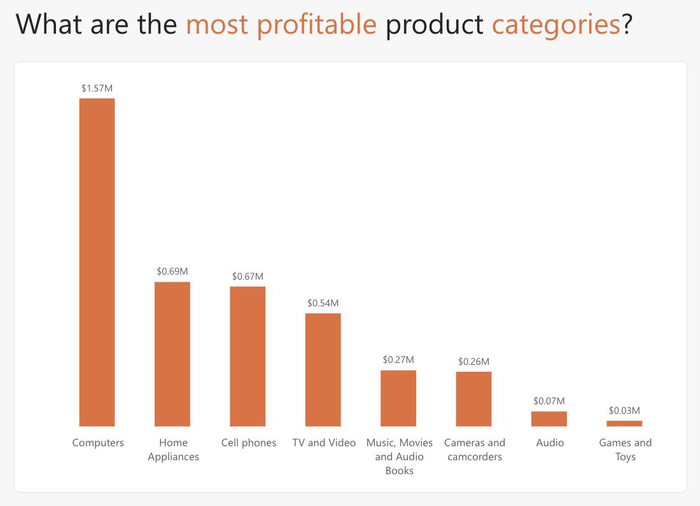

I'm from the San Francisco Bay Area and studying Information Science with a minor in Business in CU Boulder's College of Media, Design & Information. I graduate in May 2028. I like starting with a vague question like "who are our best customers?" and working it down into a query, a number and a decision.
Before I wrote SQL against retail sales data, I worked on the other side of the register at Tommy Bahama and Bluestone Lane. That's why I care about what the numbers mean for the people running the business. On campus I'm Social Chair of Pi Kappa Phi, where I manage a $100,000 semester budget, and a board member of the CU Alternative Investment Club. Before college I spent four years as a varsity swimmer and water polo player.
-
2026 — now
Board Member · CU Alternative Investment Club
Research and present alternative investment ideas at bi-weekly meetings, grow membership through campus outreach, and recruit mentors and guest speakers.
-
2025 — now
Social Chair · Pi Kappa Phi, Eta Gamma
Manage a budget of up to $100K a semester for a 180+ member chapter, one of the largest Pi Kappa Phi chapters in the nation. Negotiate with vendors and coordinate events across Greek life within city safety rules.
- Budgeting
- Negotiation
- Event planning
-
Summers 2025–26
Server · Bluestone Lane
Worked every front-of-house role (register, host stand, running) during high-volume rushes, and was invited back for a second season.
-
Summer 2024
Sales Associate · Tommy Bahama
Handled sales, returns and online-order fulfillment, which gave me hands-on experience of the retail data I now analyze.
University of Colorado Boulder
B.S. Information Science, Minor in Business · Expected May 2028 · College of Media, Design & Information

Contoso Retail Analytics ↗
Four years of sales for a global electronics retailer. I wrote SQL with CTEs and window functions to rank products, segment repeat customers and track year-over-year growth, then built a Power BI report from the results.
- T-SQL
- Window functions
- Star schema
- Power BI
- Data
- SQL Server / T-SQL
- CTEs & joins
- Window functions
- Data modeling
- Visualize
- Power BI
- DAX
- Dashboard design
- Build
- HTML5
- CSS
- Git & GitHub
- Lead
- $100K budget mgmt
- Vendor negotiation
- Retail & customer service